1. Viaje por el Norte de España
1. Viaje por el Norte de España
5 a 11 de agosto de 2021
Día 5, paso por Vizcaya de camino a Santander
9 de agosto de 2021


21. Llodio
21. Llodio
Salgo de Miranda de Ebro de camino a Santander y hago la primera parada en Llodio, un pueblo que pese a ser grande apenas tiene que ver la plaza principal.
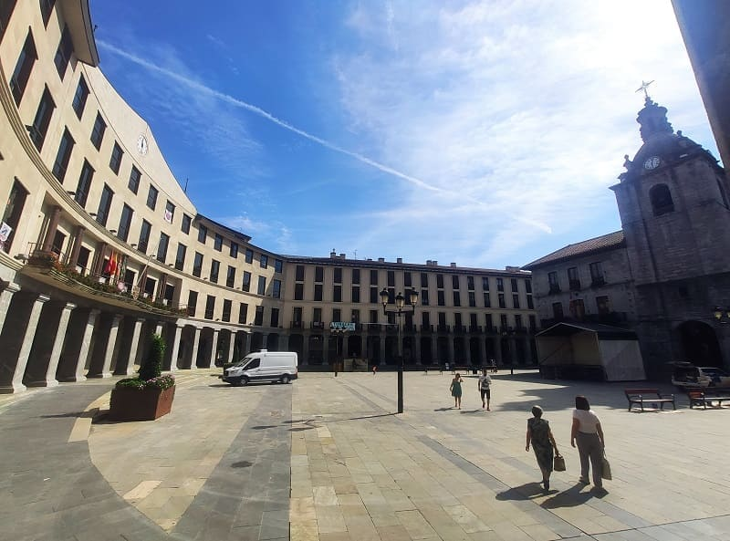


22. Bilbao
22. Bilbao
Continuo hacia Bilbao y dejo el coche en parque Europa, cerca del barrio de Bolueta. Ahí parto hacia el casco histórico encontrándome con multitud de edificios importantes en torno a la ría de Bilbao. Para empezar la visita cruzare por el puente de san Anton y vere
la iglesia de San Anton. A un lado hay un mural de un pintor Manuel Losada. También se puede ver el tranvía que atraviesa Bilbao. En esta calle se pueden ver algunos edificios antiguos como
el edificio de Ferrocarriles Vascongados.


Subire un poco por la calle lateral a la ría de Bilbao,
del río Nervión y me adentrare en el casco histórico. Aquí hay multitud de comercios, bares de tapas, o pintxos como dicen allí, y restaurantes muy importantes en los que la calidad de la materia prima y la fama de muchos cocineros ha catapultado a su estrellato y los precios también así lo demuestran.
En el corazón del casco histórico se encuentra
la catedral de Santiago de Bilbao. Este templo es de principios del siglo XVI salvo su facada y torre que son del siglo XIX. Es la iglesia más importante de la provincia y ha sido levantado sobre un templo románico que sufriría un incendio en a finales del siglo XIV. Existía un retablo mayor de estilo gótico pero se perdio así como otras obras en diferentes eventos. El peor una inundación a mediados del siglo XX que por la cual ha sido restaurado todo el interior y parece moderna. Yo no entre al interior ya que el precio para este templo me parece excesivo teniendo en cuenta que no alberga nada de valor, mas bien parece una iglesia moderna con dimensiones de catedral.

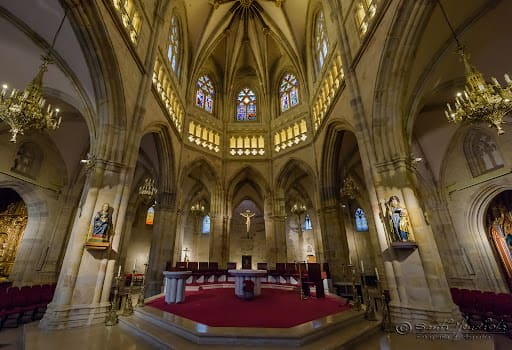
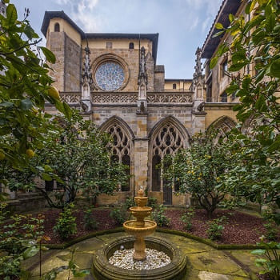
Después de visitar la catedral iría hacia el Arenal donde se encuentran muchos de los edificios centrales de la ciudad. Siguiendo con el plano religioso tenemos la iglesia de San Nicolas de finales del siglo XVIII de estilo barroco tanto por fuera como por dentro.
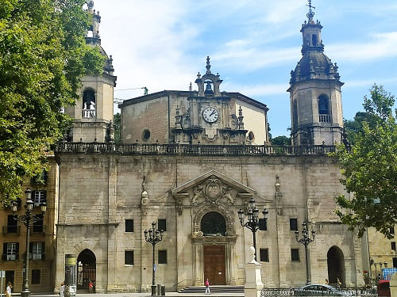
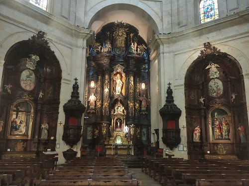
En frente se encuentra el teatro Arriga, edificio neobarroco de finales del siglo XIX con capacidad para 1500 personas. En esa calle varios edificios neoclásicos del siglo XIX y XX.
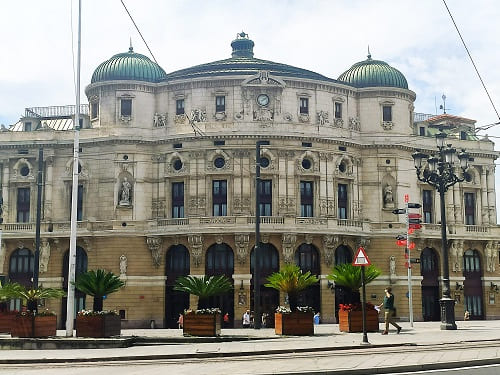
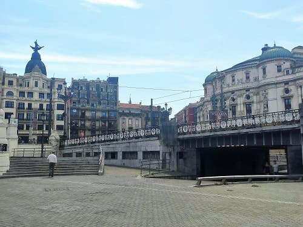
Y al fondo el ayuntamiento de Bilbao cerca de un puente antiguo. Es un edificio de finales del siglo XIX inspirado en edificios franceses de la época. El estilo es una mezcla entre clásico y barroco, llamado ecléctico.
Por dentro tiene varias salas muy adornadas y destaca la sala Árabe inspirada en el estilo de la Alhambra o los alcázares reales de Sevilla.
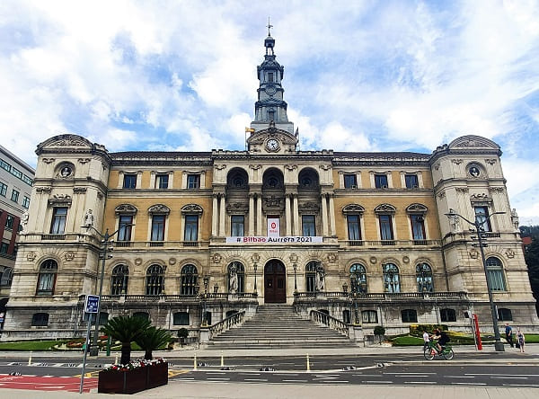
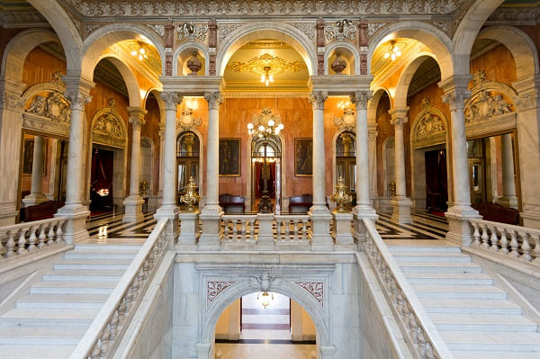
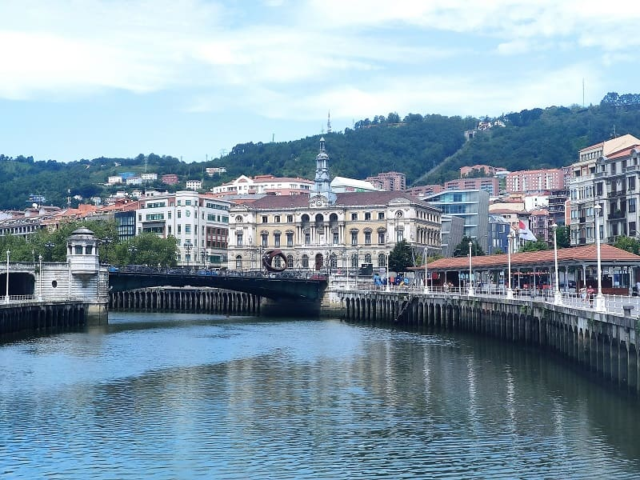
Muy cerca de la iglesia de san Nicolas se encuentra la plaza Nueva de estilo neoclásico que se terminaría a finales del siglo XIX.
Tras dejar esto partiré hacia el Bilbao moderno y el puente de Calatrava así como el museo Guggenheim.
Los edificios más modernos de los cuales expondre algunas imagenes son:
- Torres Isozaki y puente de Calatrava
- Museo Guggenheim
- Azkuna Centro (almacen de vinos)
- Sede de Sanidad de Bizkaia
- Edificio Fronton de Bizkaia
- Biblioteca Foral de Bizkaia
- Biblioteca Crai Deusto
- Torre Iberdrola
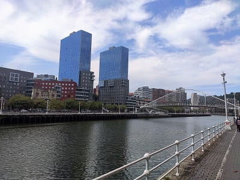
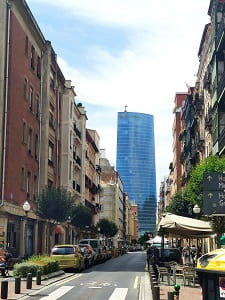
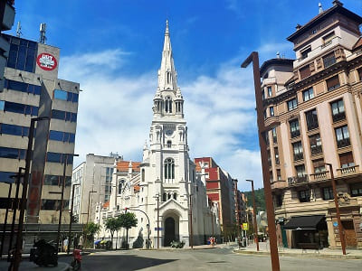
El museo Guggenheim fue diseñado por el gabinete de arquitectos de Frank Gehry, fue abierto al público en 1997 y alberga exposiciones de arte de obras de estilo contemporaneo. El diseño del museo de estilo deconstructivista y su construcción siguen el estilo y métodos de Frank Gehry. Como muchos de sus trabajos anteriores la estructura principal está radicalmente esculpida siguiendo contornos casi orgánicos. El museo afirma no contener una sola superficie plana en toda su estructura. Parte del edificio es cruzado por un puente elevado y el exterior está recubierto por placas de titanio y por una piedra caliza que fue muy difícil de encontrar (al final se logró encontrar en Huéscar, Granada) de un color similar a la que se utilizó para construir la Universidad de Deusto.
El edificio visto desde el río aparenta tener la forma de un barco rindiendo homenaje a la ciudad portuaria en la que se inscribe. Sus paneles brillantes se asemejan a las escamas de un pez recordándonos las influencias de formas orgánicas presentes en muchos de los trabajos de Gehry. Visto desde arriba, sin embargo, el edificio posee la forma de una flor. Para su diseño el equipo de Gehry utilizó intensamente simulaciones por ordenador de las estructuras necesarias para mantener el edificio, consiguiendo unas formas que hubieran sido imposibles de realizar unas pocas décadas antes.
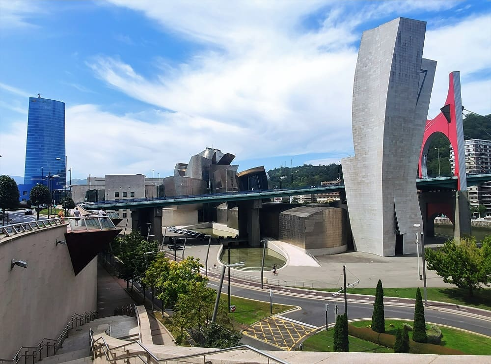
En esa zona se puede ver toda la ría, con las grúas portuarias y el museo marítimo. Partiré hacia el Bilbao más moderno, del último siglo,
el parque de doña Casilda y San Mames, el estadio del Athletic. El parque de dona Casilda de estilo inglés era hasta hace no mucho el único parque en el centro de Bilbao. En el se encuentra
el museo de Bellas Artes. En el interior puedes visitar el estanque de Don Pato, la estatua de Doña Casilda o la Pergola, un conjunto de muros decorativos de estilo neoclásico con dos grandes fuentes.
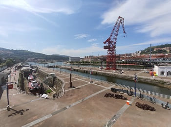
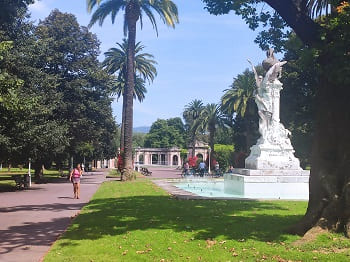
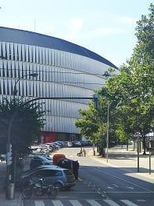
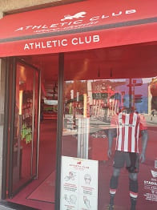
Una vez visto volveré sobre mis pasos visitando diferentes edificios históricos de la ciudad como
la plaza Federico Moyua que la rodean edificios tan importantes como el palacio Chavarri, el hotel Carlton, y otros hoteles y entidades locales.
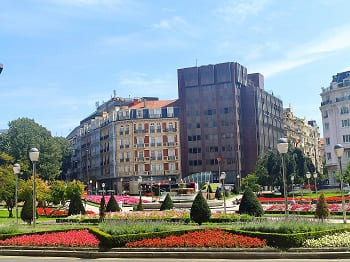
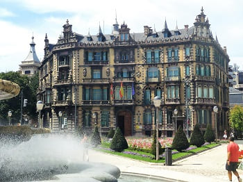
Cerca esta el palacio de la diputación,
la iglesia del Sagrado Corazón de estilo modernista, muy parecida a la iglesia del Raval en Barcelona inspirada en obras de Gaudí. Y ya continuaré hasta llegar al coche en Bolueta.
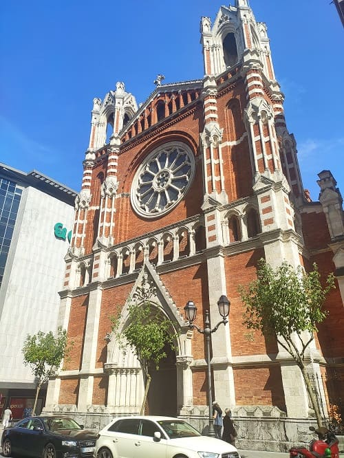
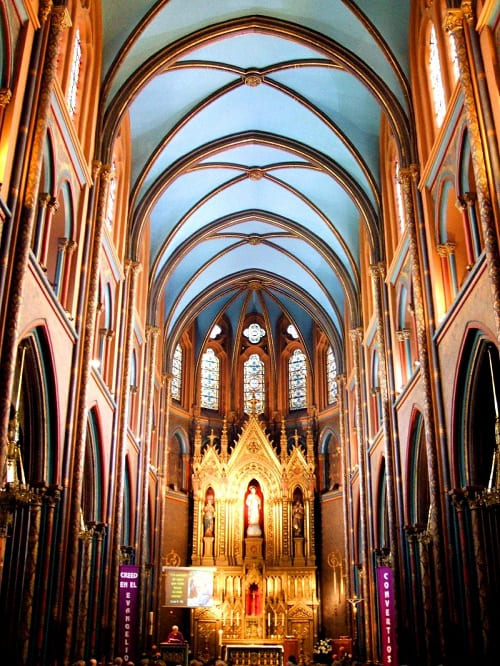


23. Castro-Urdiales
23. Castro-Urdiales
Antes de llegar a Santander parare en
Castro Urdiales ya en Cantabria, pueblo de veraneo conocido por tener una gran industria de la anchoa, pescado típico de Cantabria que generalmente se vende en conservas. Además de sus playas cuenta con el encanto de
su castillo y la iglesia de Santa María de la Asunción a orillas del mar. Esta iglesia es del siglo XIII de estilo gótico y se le conoce como la catedral de Santa María. Decir que tiene mucho más historia y es más catedral que la de Bilbao vista anteriormente. Con esto dejaremos ya la partida lista para Santander.
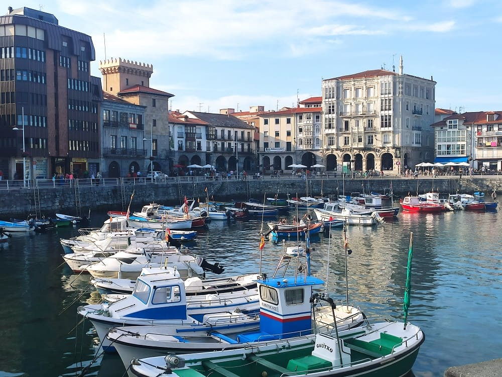
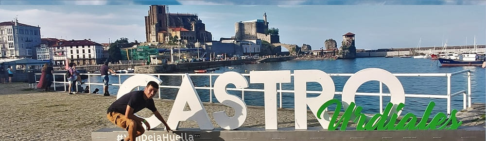
Ayuntamiento,s.XIX y museo Guggenheim.
22
Paseo Marítimo y plaza Brazomar.
23
Día 6, de Santander a Palencia (CLICK para continuar)
10 de agosto de 2021

![[Valid RSS]](https://www.onepointsync.com/wp-content/uploads/2016/08/valid-rss-rogers.png "Validate my RSS feed")